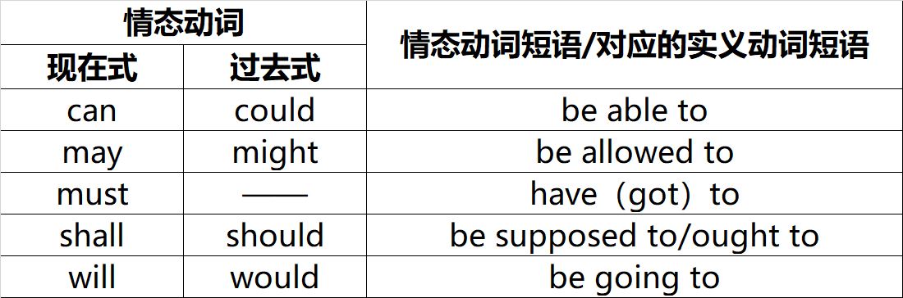

反映说话人微妙的心态变化, 表达说话人对事件的看法.

其中现在式与过去式并不完全对等,只是形式上后者是前者的过去时,但意义上并不完全对应.他们既有共同的用法,也有各自的意义;另一方面,这四个过去式形式的情态动词并不一定表示过去的时间(实际上通常都不是).后面的实义动词短语对应的其实是情态动词基本用法的含义,有关这些短语的用法和什么是基本用法,后文会有具体描述.总之这三列并不是一一严格对应的.
情态动词需要置于实义动词之前,搭配常规动词一起使用.
可以分为三类:推测用法,基本用法,虚拟用法.
表示"逻辑的可能性"我们称之为推测用法,即表示人们对某件事发生的可能性大小所做的判断.
基本用法即各个情态动词各自基本的意思,比如can意为能够,must意为必须,should意味应该......哪些实义动词短语的含义就是这些情态动词的基本用法的意思. 需要注意,即使是用作基本用法,情态动词也不能单独作意思,不能独自充当谓语,需要搭配实义动词才行.
情态动词中的could\might\would\should四个词还可以用作虚拟语气.不够虚拟语气某种程度上也可以算作是推测用法的一个重要分支.有关虚拟语气相关的知识,将会在单独的专题介绍,本章不讨论该用法.
情态动词的搭配有着严格的要求,各种形式和其能表达的意义是严格,明确的.
这种结构就是在情态动词后面接动词原形.
在这以结构中,情态动词可以是推测意义,也可以有基本意义.
这种用法只能表示推测的含义.只要情态动词后面接这些时态,表示的就一定是推测,不可能是基本意义.
这种用法情态动词也是只能表示推测含义.
这种用法为的是解决这样一种情形:有的时候即需要情态动词表达推测意义,还需要借助一些情态动词的本身的基本意义.这样就势必要把两个情态动词连着用,这会显得很奇怪,并且语法上也不允许两个情态动词连着用.这便是情态动词短语的作用: 通过情态动词短语xxxx to连接实义动词共同构成谓语(有关动词不定时会在专门的章节讲述),情态动词表示推测,短语表示基本意义.
If you could just concntrate on getting finished, we might be allowed to leave early this afternoon.
事实上,情态动词的用法,只在时上严格区分了现在\将来\过去,并没有在体上区分,并没有将动作严格分出一般\进行\完成\完成进行.
只有与进行式和完成进行式的搭配,并且进行式和完成进行式的时间参照节点都是现在.
使用情态动词的句子不那么关注动作的体态,其实更确切地说是使用情态动词地表意场景不会出现这些无法表达地情形.
语法要求(不知道为啥),情态动词后面只能接动词原形,这也解释了上面说的不能表示过去进行式\将来进行式\过去完成进行式\将来完成进行式.这也印证了上一节地内容:在结构搭配上,情态动词不能"+"一起列过去式的时态结构,也不能"+"将来式.
不过虽说不能"+"将来式,但却和他能够表达对将来时刻的事件推测不矛盾.这也是英文中比较特殊的地方:will身兼数职,既可以作为将来时的标指,又可以身为情态动词表推测.事实上在具体的语境中,will,shall纯表将来，而不表示情态意义的情况并不多.
但更确切地说是,情态动词和谓语时态上的搭配,和真正表达地时态(准确地说是时间),是没有任何必然联系的,这将是一种新的对应关系.例如你下面就可以看到:情态动词+一般式能够表达将来推测,这可能令你感到很困惑.下文将会按照所推测事件的时间分类,尽可能地建立起不同"情态动词+谓语"结构与推测事件的时间的对应关系.
对现在的肯定推测
must: 一定,准是,必是,必定,......
must do或者must be doing(这一形式不是一般式的用法,是进行式的).
may/might/could: 或许,可能,应该,有可能,......
不同的词所表达的程度不太一样,给出一个大致的差别:
is陈述句(100%确定,对客观事实的描述)>must(90%确定,很有把握)>may(50%确定,不太有把握)>could/might(25%确定,很没把握,只提供一种可能的情况)
对现在否定的推测
isn't陈述句(100%,对客观事实的描述)>can't/couldn't(90%,很有把握)>may not(50%,不太有把握)>might not(25%确定,很没把握,只提供一种可能的情况)
当用于表推测时,must不能用于否定,否定的mustn't只能用于基本意义表示命令别人不要干什么; 当用于表推测时,can不能用于肯定, 肯定的can只能用于基本意义表示能够/可以.此两者在肯定否定中刚好相互对应,填补了对方无法表达的空白.
肯定和否定的情态动词基本上是对应的,但有一个例外就是could,可以看到在否定中他移动到了可能性第二大的位置.他在肯定推测中,肯定程度很低;但在否定推测中,则表示十分确信,译为"不可能",确信程度和can't是一个级别的.
could和might虽然是过去式,但在表推测中他们仅是程度差别,和时态没关系.在这里并不是表示对过去的推测,而是表示的对现在的推测,或将来的推测(详见后).且这两个词没办法表示对过去的推测.
will和shoud表示对现在的肯定&否定
这两个词多主要是表示对将来的"预测",很少表示对现在的"推测",但有的时候也可以这样使用,表示一种很言之凿凿的肯定意味,程度和must相同.
Ring his home number. He'll be at home now.
给他家打电话吧,他现在肯定在家.
It's no use asking Tom; he won't know.
这事儿问Tom也没用,他不会知道的.
Someone is knocking at the door.
That'll be the postman.
准是快递员
This should be State Stree up here.
这应该就是国家大街了.
除此之外,should表示对现在的"推测"时还有其他限制,详见后.
可以看到这里有两个情态动词没用到: shall跟would, 是的,这两个词没有把发用于表对现在的推测.
除了must都可以用来表对将来的预测.
will(shall) ≈ would ≥
should＞may＞could/might
will是言之凿凿地\肯定地.
would表示较大程度的预测\推断,一般有事实或某种依据.
should也表示较大程度的预测,相当于"很可能将会这样了".
may表示50%确定的预测.
他们的否定加not即可,和前面现在预测不同的是,将来预测的肯定表达没有must,否定表达依然有can't,表示很大程度的否定,即"不可能".和will同级.
除此之外could的用法和现在预测也一样:在否定句中couldn't和can't是等效的,语气比may
not/might not更强烈.
值得注意的是,should表示说话人的一种何理假设,但他也表示对说话人所希望发生的事进行推断,这种"应该"往往都是说话人想看到的.所以如果将来的事件不是他期望发生的,则不应该用should表示这种推测,可以换成could或者其他(也不能是would).
should不光在这里表推测有这种限制,他在任何推测用法中都有这层意思/限制,后文不再赘述.
must>may>might>could
否定需要把must换成can't/couldn't
should也可以用于过去,表示非常确定的推测,意为"不出意外的话"\"应该",强度仅次且接近must.
will和would也可以用于表示过去推测,两者效果等同,站在某一过去事件节点对该时刻的将来/现在推测,强度等同于must.
对于过去形式的情态动词could\might\would\should,在没有语境的情况下,可能会存在"推测"与"虚拟"之间的歧义.我们可以通过上下文来分辨:知道确切结果的是表示虚拟,不知道确切结果的表示推测.除此之外,很多处搭配都存在类似的歧义问题,判断方法和此处一样,此后不再赘述.
在相应的进行时态或完成时态的意思上增加了情态动词的推测意义.
这种用法具体能搭配哪些情态动词并没有一个严格的说法\约束,很多都是习惯上的.
至于确信程度你会发现前面哪几种,情态动词之间的确定程度都是有相同的顺序的,这几种用法都是一致的.
诸多限制例如must肯can't否,should有主观上的希望,could否定时等级提高,这些都是一样的.
You must have been dreaming. 你刚才一定是一直在做梦.
You can't/couldn't have been swimming all day. 你不可能一整天都一直在有用.
I an afraid he hasn't found a job. He must still be checking the papers. 我恐怕他现在还没有找到工作,他一定还在翻着报纸找呢.
传统语法书上说,can主要有三个意义,即“能力”,"可能","许可",其实都是源自"潜能(potential)"这一核心意思.本节主要讲can做能力的意思.
从核心意义讲,can强调的是"潜在可能性",而不是真正去实施.都是表明主语有完成这一行为的"潜能",而没有真正去实施.表示"潜在的可能性"或者说"可能",意思就是因为具备某些特点或条件,某人能够完成某事是可能存在的.而和说话时的实际情况无关.
形容过去的能力并不是简单的把can变为过去式could.
因为can的核心意义是"潜在的可能",并没有真做,不知道做没做,不关心做没做,和说话时的实际情况无关.当用can谈将来或现在的能力的时候,因为本身也没做,这种"潜在的可能性"我一直存在的,以至于我们忽略了这一思维.但我们在谈论过去的事情的时候,因为这件事已经发生了,这种"潜在的可能性"就有可能会(但不是必然)丧失.这也是could与was able to的区别.
对于过去的能力我们要分成两方面:
过去具体的能力/具体的某一件事
这种情形对应的是具体的过去某件事,这就不存在潜在的可能性.
这种情况下就不能用could表能力,例如:
× : Yesterday I could go to Disneyland.
这样的表达就是错的,对于这种过去的具体时间表达能力,外国人希望表意更加精确: 到底去了没去?
如果去了就应该说:
Yseterday I was able to go to Disneyland.
如果没去就应当用虚拟语气:
Yesterday I could have gone to Disneyland.
过去一般的能力
如果表达的是过去具备的一种能力(现在具不具备不知道),而不是谈论某一件具体的事情,那这种情形和"现在或将来的能力"是一样的,使用could.
I could run after a bus and catch it twenty years ago, but I can't do that now.
20年前我可以追上汽车,但现在不行了.
这只是说明我过去有"追上汽车"的能力,而并没有强调\讨论我的某次"追车"的行为,即表示的是一种"潜能"或"一般能力",所以用could表示.
这里不能can,因为can是表示将来或现在能力的.
这里的可能与前面表推测的可能有着显著的区别,前者是理论上的可能,后者是现实上的可能.
尽管在汉语上两者都说成是可能,没有区别,但是在英语中他们两者不论是形式还是内涵都有着显著区别.现实的可能往往是根据现有事件的某种条件推断某一事件发生的可能性/原因.而can就有"潜能"这一特性,决定了他只能用来表示理论的可能,而不能用来表示实际上的可能.can作为理论上的可能,强调的是一般意义的能不能发生,即"会不会".
通过以下例句体会两者的区别:
Can prolonged exposure to the sun burn my skin?
长时间在太阳底下暴晒有可能会晒伤我的皮肤吗?
Someone is knocking at the door.Who can it be?
有人在敲门,可能会是谁呢?
The boy look palle. He could be sick.
这种理论上的可能,听起来和能力的用法很相似,毕竟他们都源于同一核心意义,比较容易搞混,请分析下面的例句:
Grammar can be fun!
注意,can这种理论的可能,往往只适用于肯定句,不能用于否定句.因为这种"理论上的可能"意味着"世无绝对"的普遍真理,如果用can't否定,就相当于说"什么事都不可能发生",这是矛盾的.大多数情况下,这种用法虽然在语法上没错,但是不符合现实情况或科学道理.
如果真的要用can't来否定一个"可能性",这个"可能性"一般就是实际上的可能"或者说"具体的可能",即否定一件具体特定的一件事,而不是否定一般的真理.他表示的是具体的可能性,确定程度.
语法书上是这样写的,但我觉得不对,因为不是显然有一些科学道理上不可能的事情么,例如"碳不可能和水起反应",我感觉用can't就可以,不过这种情形似乎是can表能力的用法?但我还是觉得一定有很多情况,需要表达一件事,在理论上"不可能".
一般用陈述句,如果是疑问句则表示请求,见下一节.
肯定的陈述句表示允许某人做某事,否定的陈述句表示不允许某人做某事.
否定句表示拒绝许可,甚至禁止:
No, I'm afraid you may not.
You can't take the test paper out of the classroom.
could一般不用来表示现在的许可,而表示过去的许可.此时可以与was/were allowed to do互换.
I could/was allowed to read what I liked when I was a child.
用于表达过去许可是,对于一般事件的许可,如上;但对于某一具体事件,和前面的表过去的能力同理,could和was/were allowed to do是有区别的.情态动词只能表示过去的一般许可,对于具体事件,只能使用be allowed to do.
Yesterday evening, Peter was allowed to watch TV for an hour.
这种意思可以分成四种程度:
must在表示必须的时候,可以是非常强烈的义务,比如法律规定,或是某些规章制度\规定等:
You must wear a seat belt while driving.
Door must be closed when machine is in operation.
must还可以是表示说话人主观认为某事是重要的\必须完成的"义务":
You must concentrate on one thing at a time. 你做事必须一心一意.
这就比上面的法律规定弱很多,还有一种更弱的"义务",用来谈未来的"安排",比如:
I must remember to feed the cat.
I must try harder next time. 我下次必须更努力.
除此之外还有一种更弱的,谈将来的"安排":
You must come to see us one of these days. 你这几天得来看看我们啊.
We must get together for lunch sometimes. 我们得找个时间聚一聚, 吃个午饭.
此处比较下作为基本用法的必须,与作为推测用法的必须之间的关系:
与must相关的情态动词短语是have(got)to. 他同must一样,既可以表示"推测",也可以表示"必须".这也是比较特殊的,
他对应的短语除了基本意义,也还能表示推测意义.
不过因为have可以有时态变化:对于表推测而言,用had to表示对过去的推测,也不能推测将来;对于表必须时,
过去可以had to, 将来用will have to, 现在完成时用have had to, 过去完成时用had had
to.表现力比较丰富,弥补了must表必须的不足.但表过去推测和必须之间存在歧义,因为都是had to.
除此之外,对于必须的用法,如果是来自外界的不可控的行为,此时要用have to, 一般不用must. 比如"要打喷嚏"是我们无法控制的, 所以要说:
Excuse me, but I have to sneeze.
除了以上两点,还需要注意,must表必须,但must自身没有否定,mustn't的否定是施加于谓语的,表示"千万别做某事".(有关否定施加在情态动词还是谓语,后文会有详细的讲解) 因此,必须的否定,不必要用don't have to表示. (并且表推测时,一定是的否定也不是mustn't,而是不可能是can't).
第一人称: can/could, may/might
第二人称: can/could, will/would
很客气地请求对方: could, would
相较于上面两个,will稍逊,适用于和熟悉的朋友之间
语气最不客气的是can,但并非不客气,就是正常平淡无感情色彩的语气
Can you pass me the salt, Mom? 妈妈,把盐递给我好么?
可以看出,表请求时,使用的情态动词用作表推测时概率越小,越是不肯定,就显得越犹豫,礼貌.除此之外还可以通过加一些列表示情感意愿得副词,变得更加委婉恳切.
以下是一些常用的表示很礼貌的"请求:
Could you do...?
Could you please do...?
Could you possibly do...?
Would you do...?
Would you kindly do...?
Would you mind doing...?
Would you be good/kind enough to do...?
Would you be so kind as to do...?
Do you think I could...?
Do you think you could/would do/would mind doing...?
以上看到,表示请求的句型通常是一般疑问句,但也可以用wonder的各种陈述句句型表示比上面更加礼貌的请求:
I wonder if I could do...
I wondered if I could do...
I was wondering if I could do...
I wonder if you could/would do/would mind doing...
I wondered if you could/would do/would mind doing...
I was wondering if you could/would do/would mind doing...
cuold表建议,用于陈述句
We could go to the cinema.
Shall用于第一人称一般疑问句,用于征求对方的建议
Shall I ...? Shall we ...?
may (just) as well, might (just) as well: 倒不如,不妨,最好
You might just as well wait till Wednesday and go by plane.
有的时候这种说法还多少有一种勉强或讽刺的意味,表示"在没有其他更好的选择的情况下,只好为之"
It's no use waiting here. We might as well start walking.
在这里干等着也没用,我们还不开始步行回去.
should和ought to表示"忠告"
表示建议\忠告\规劝\某事是应该做或恰当的.
ought to多用于口语而非书面语中.
他与表示建议的could相比,should表示强烈\明确的忠告,could表示建议某事的可能性,只是说"有这么一种可能/选项".
had better表示"忠告"
常用于口语,后面接动词原形(似乎不太符合语法),否定用had better not do.
用had better表示忠告时,会暗含"如果不这么做,就会有(不良)后果",而should更为中性.
意愿:will
意为"会"\"来"\...
I'll get it.
We'll carry those for you if he won't.
意图或打算
I will borrow some money and buy a car.
意图的两个极端:承诺与威胁
I will make dinner tomorrow night. 承诺
I'll call the police if you don't leave. 威胁
执意
will表示执意,来源于其表示意图的含义,因为当某人坚持自己的意图而不愿改变时,就变成了"执意".
此时,肯定的will表示某人坚持要做某事,这里如果是"I will"就相当于"I insist";否定的won't表示某人坚持不愿意做某事或者禁止做某事,这里如果是"I won't"就相当于I refuse.
If you will go out without your overcoat, what can you except.
如果你执意不穿外套就出门,你还指望有什么好结果呢>(比如说你肯定会冻感冒)
注意,will用于表达"执意"这样会强烈的感情色彩时:①不要缩写成'll,要用will.②will要重读. 如果没这样则缩写则更多的包含有"意图"的意思.
will的过去时would也可有执意的用法,用于描述过去的事情,此时也要重读且不能缩写成'd.(那其他两种即意愿和意图过去时用would还是will啊?)
因为他也时虚拟语气的标志词,需要根据上下文语境判断具体是表示虚拟,还是表示过去反复发生或习惯性的动作.
例句:
When I was a child, my mother would read me a story at night before bed.
用woudl表示过去习惯或重复动作时,还可以指某人一贯的行为.往往用来批评这种行为或表对他人的行为怀有某种恼怒的情绪,此时would需要重读.
Jack would get lost, wouldn't he? Jack老是迷路,是吧?
It's typical! 可不是嘛!
值得注意的是,used to也可用来表示过去习惯的动作.但二者之间的区别是: used to 可以表示过去重复的动作,这是两者共同的地方. ①除此之外used to还可以指过去的状态;而would不能表示.②used to带有"现在不再"的含义,即只是过去这样,现在不这样了;但would并不关注这一点,只是单纯的说以前怎么样,至于现在还是不是这样?不知道.
Illiteracy is still a problem in my country, but it used to be much worse.
文盲在我们国家仍然是一个问题,但在过去更为严重.
这里就不能说it would be much worse, 因为be much worse同样表示的是一种状态.
竟然
在一些形容词后面的从句中的should,带有一种很“惊奇”的感情色彩,含有“竟然”的意思.
比如It is/was absurd, amazing, annoying, funny, ludicrous, odd, ridiculous, strange, surprising, unthinkable that......
It is ridiculous that we should be short of water in a country where it is always raining.
不过也不见得这种表达非要加情态动词,也可以用现在时态或者过去时态,意思一样.
It is ridiculous that we are short of water in a country where it is always raining.
除此之外还可以用在这样的结构中: 放在can't think why, I don't know why, I see no reason why等
I can't think why he should have been so angry.
万一
常常用在lest, for fear that, in case等引导的从句中,表示"万一".
I've brought my umbrella in case it should rain.
我带伞了,以防万一下雨.
不过此时从句的谓语也可以用正常时态,用一般现在时或者一般过去时都可以,可以不用情态动词should,意义不变.
I've brought my umbrella in case it rains.
他特殊在兼有请求\建议与忠告\意愿这三方面的意思, 并且每一种并非严格算是该种, 还存在一些差别.
用于第一人称的疑问句中,Shall I/we...? 用于表示可以主动提供帮助\提供建议\请求给予指示
主动提供帮助
Shall I open the window?
相当类似于: Would you like me to open the window?
主动提供建议
Shall we meet at the theater?
Let's meet at the theater, shall we?
Shall we leave at two?
What shall we do this evening? Shall we go to the theater?
请给予指示
How shall I cook it?
Where shall we put this?
用于第三人称的疑问句中,表示提供建议或者请求给予指示的意思.
A man wants to see you, sir. Shall he wait outside?
类似相当于Would you like him to wait outside?
Shall he come with us?
类似相当于Would you like him to come with us?
用于第二或第三人称陈述句中, 表示命令\许诺\意愿甚至威胁
命令
在法律条文,规章制度中, 常用shall表示"命令",这主要用于第三人称. 此时shall在意思上接近must.
It has been announced that candidates shall remain in their seats until all the papers have been collected.
这样使用的shall很正式, 若不是很正式的场合,可以用must或are to do来代替shall.
说话人的许诺
You shall have the money back next week.
相当于I promise you will have the money back next week.
(我答应)你下周一定能拿回这钱.
说话人的强烈意愿,甚至威胁.
They shall do as they are told. 他们一定要按照吩咐他们的去做.
You shall pay for this. 你一定得为此付出代价!
在may...but这样的结构中,表示让步.
We may have our difference from time to time, but basically we trust one another's judgement.
≈Although we have our differences, basically we trust one another's judgement.
之所以习惯用may这样的几乎已经失去"可能"的情态动词,而不是直接用一般现在时,主要是出于礼貌或委婉表达的考虑,比如:
You may have good reasons, but that doesn't make it legal.
I may be small, but I am influential.
基于may可以表示让步,因此他常常用于各种结构的让步状语从句中. 这是通过让"不管"的事物加上一个表示很若可能的"may".来加强让步语气. 相当于汉语的"可能会多么的".
But however amazed our descendants may be at how far from Utopia we were, they will look just like us.
有时候也会省略may/might,只剩一个动词原形,这也算可以的.
Try as he will, no man breaks wholly loose from his first love, no matter who she be... We've only virginity to lose and where we lost it there our hearts will be!
这里的try as he will也算一个让步状语从句的结构,意为不管怎样.
除此之外, 有的时候也会用might, 这和may的效果一样.
对于有情态动词又有否定的句子,MODAL\NOT\VERB之间的顺序是严格的,即:MODAL+NOT+VERB.
这就存在一个问题,not到底是作用于情态动词,还是说是对谓语动词的否定,这就存在一个区分的问题,这会导致句意的不同.
not否定的是情态动词,称为外部否定;not否定的是谓语动词,成为内部否定.
英语中不存在通过移动not位置来区分内部否定或外部否定,并且对于特定的情态动词,一般只能内部否定和外部否定二选一,只有一种情形适用,不像汉语可以想施加谁施加到谁.
疑问句
对于疑问句,是很容易区分的,因为情态动词被提前了.
如果not是连着情态动词被提到句首,此时就是外部否定,即强调"某事应该做";
如果not是连着谓语动词的,在谓语动词前,此时就是内部否定,即强调"某事不应该做.
陈述句
这很难区分,要看句意:
推测用法的情态动词, 一般是内部否定, 即否定的是谓语动作;
基本用法的情态动词,
一般是外部否定, 即否定的是情态意义.
特例can:
事实上这样听起来,好像有些情态动词,就只能否定两者中的其一,看似会限制表达,实则不然.例如推测用法,can也好may也好这种,否定动作或者否定概率最后的意思区别都没太大的区别.
You can't be serious. 你不可能是当真的吧.
这句话如果你用上面那句话理解,理解成你肯定没有当真,确实是没有太大区别的.
但是用下面这一思路理解, 上面的说法就不成立,
can恰巧是个例外情况:
这里can表示推测,但can't显然是外部否定"不可能",否定的是情态动词,而不是对谓语动词否定,不是"可能不",
can表示90%确定, 是很有把握的陈述, 此时can不适用于上述规则.
特例must:
同样的,对于must,上述规则也不适用.因为must用于推测,本身就没有否定,就好比can没办法表示肯定一样.这一点和上面的也算是能相互印证.当must用于基本含义表示"必须"的时候, 其否定形式mustn't的意思是"千万别做某事", 这里否定的是谓语动作, 即一个内部否定, 而不是上面说的外部否定. 至于must作为基本用法的外部否定, 显然是有这样一个表意的需求的, 意为"不必", 那么就应该说成don't have to.
双重否定:
情态动词加not的缩写然后再加一个not.
例如couldn't not, 类似汉语里的"不能不/不得不".
两者并没有办法能够严格对应.
尤其明显的一点就是英文中情态动词的委婉表达, 在汉语中的缺失, 汉语中是没有专门的像情态动词这样的方法来实现委婉表达的, 一般多是通过一些语气词\语调的变换.